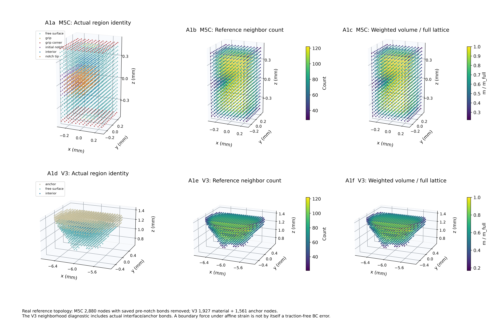
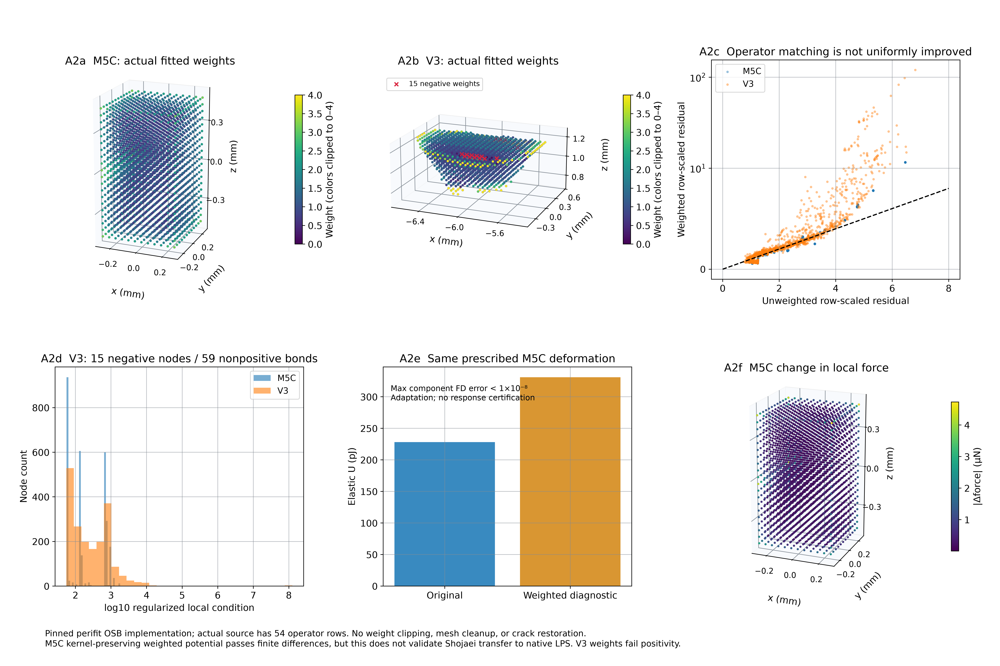
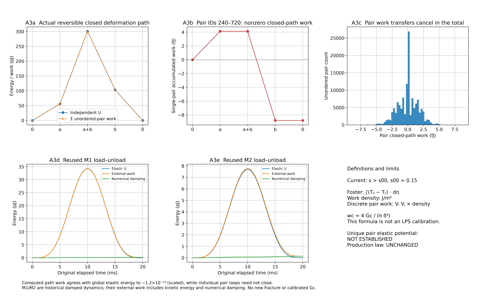

A · LPS 表面权重与能量失效可行性
Run 20261011T184653Z · 真实数组绘图 · 离线工程与研究结论分项验收 · 未运行新断裂/CFD
REVIEW_LPS_SURFACE_CORRECTION_AND_ENERGY_FAILURE_FEASIBILITY_V1.md
FINAL_STATUS.json
FOSTER_FAILURE_CRITERION_AUDIT.md
FAILURE_PARAMETER_REQUIREMENTS.md
SURFACE_CORRECTION_FEASIBILITY.json
FORCE_ENERGY_COMPATIBILITY.json
LPS_INTERACTION_WORK_AUDIT.json
A1_actual_neighborhoods

SVG
A2_weights_and_variational_diagnostic

SVG
A3_path_work_and_failure_limits

SVG